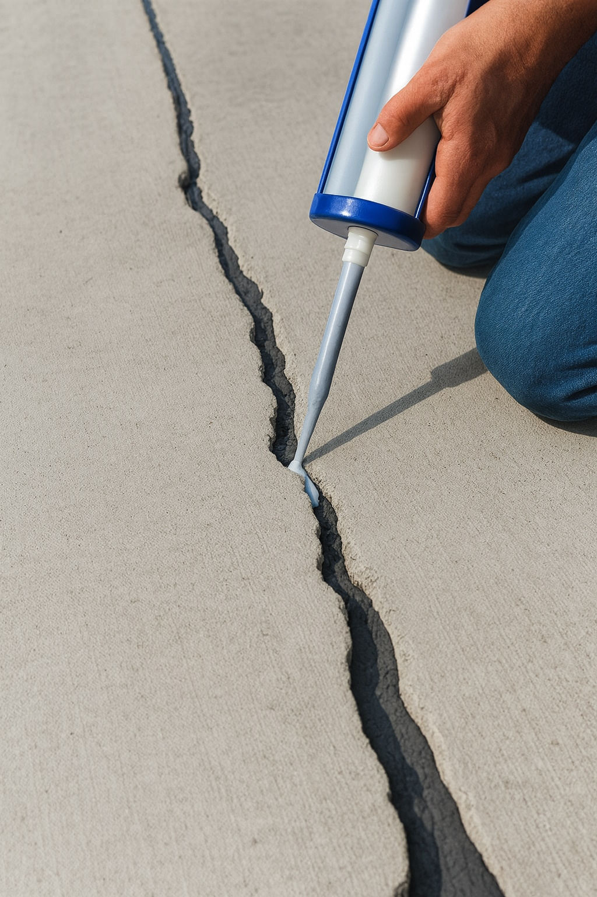

Risse im Beton – warum sie entstehen und was man tun kann
Risse im Beton sehen zuerst dramatisch aus. In der Praxis ist aber nicht jeder Riss ein Grund zur Panik. Manche sind rein optisch, andere können auf ernsthafte Probleme hinweisen. In diesem Beitrag geht es darum, wie typische Risse entstehen, wie man sie einschätzt und was sich vorbeugend und nachträglich tun lässt.

1. Einordnung: Nicht jeder Riss ist ein Schaden
Beton ist ein mineralischer Baustoff, der sich beim Erhärten zusammenzieht und auf Temperaturänderungen reagiert. Ein komplett rissfreier Beton ist in der Praxis kaum zu erreichen. Entscheidend ist:
- Wo liegt der Riss? (Bodenplatte, Wand, Balkon, Stütze …)
- Wie breit ist er ungefähr?
- Verläuft er nur oberflächlich oder geht er durch?
- Bleibt er ruhig oder arbeitet er (wird breiter, länger)?
Feine Haarrisse in einer Bodenplatte sind oft nur optisch relevant. Breite, durchgehende Risse in tragenden Bauteilen gehören dagegen immer in die Hände eines Fachingenieurs.
2. Typische Rissarten im Beton
In der Praxis treffen wir immer wieder auf ähnliche Rissbilder. Ein paar der häufigsten:
2.1 Schwindrisse (Schrumpfrisse)
Beim Erhärten verliert Beton Wasser und zieht sich zusammen. Wenn diese Schrumpfung behindert wird, entstehen feine, meist zufällige Rissmuster an der Oberfläche. Typisch:
- netzartige, feine Risse („Kartenmuster“)
- oft nur in der obersten Schicht sichtbar
- entstehen in den ersten Tagen nach dem Betonieren
Ursache sind häufig zu hohe Wasserzugabe, fehlende Nachbehandlung (zu schnelles Austrocknen) oder sehr dünne Platten ohne Schwindbewehrung.
2.2 Setzrisse
Setzrisse entstehen, wenn der Untergrund nachgibt oder ungleichmässig nachsackt – zum Beispiel bei schlecht verdichteter Tragschicht oder Auffüllungen. Typisch:
- Risse verlaufen meist in einem Bereich, oft quer zur Setzungsrichtung
- Höhenversatz auf beiden Seiten des Risses möglich
- häufig an Anbauten oder Übergängen Altbau/Neubau
Hier liegt die Ursache oft nicht im Beton selbst, sondern im Bodenaufbau oder in der Gründung.
2.3 Temperaturrisse / Zwangsrisse
Beton dehnt sich bei Wärme aus und zieht sich bei Kälte zusammen. Wenn er daran gehindert wird (z. B. durch starre Anschlüsse), entstehen Zwangsspannungen und mit der Zeit Risse. Typisch:
- Risse in grösseren, zusammenhängenden Flächen ohne Dehnfugen
- Risse von Öffnungen (Fenster, Türen) ausgehend
- Risse an Übergängen zu starren Bauteilen
2.4 Bewehrungs- und Korrosionsrisse
Wenn Bewehrungsstahl korrodiert (z. B. durch Carbonatisierung oder Chloride), vergrössert sich sein Volumen. Dadurch platzt der Beton an der Oberfläche ab, und entlang der Stäbe entstehen Risse.
- Risse parallel zur Bewehrung
- abplatzende Betonkanten, rostige Stellen sichtbar
- häufig bei älteren Balkonen, Stürzen oder Brüstungen
Solche Risse sind von Laien schwer zu beurteilen und sollten mindestens einmal von einem Fachmann angeschaut werden.
3. Wann sind Risse kritisch?
Eine grobe Orientierung – ersetzt keine statische Beurteilung, hilft aber bei der Einschätzung:
- Sehr feine Risse < 0,2 mm: meist optisch, oft unkritisch bei nicht tragenden Bauteilen.
- Risse ca. 0,2–0,4 mm: je nach Lage noch tolerierbar, aber genauer hinsehen.
- Risse > 0,4–0,5 mm oder mit Versatz: immer prüfen lassen, vor allem in tragenden Bauteilen.
Zusätzlich kritisch sind:
- Risse, durch die Wasser sichtbar eindringt (Keller, Tiefgarage)
- Risse mit laufender Veränderung (werden breiter/länger)
- Risse mit hörbaren Knackgeräuschen bei Belastung
4. Was man vorbeugend tun kann
Viele Risse lassen sich nicht komplett vermeiden, aber deutlich reduzieren. In der Planung und Ausführung helfen unter anderem:
- vernünftige Betonrezeptur (nicht zu viel Wasser, richtige Expositionsklasse)
- ausreichende Verdichtung des Untergrunds und der Tragschicht
- Schwindbewehrung oder Mattenbewehrung bei grösseren Platten
- Dehn- und Scheinfugen sinnvoll anordnen (Gänge, Felder, Türöffnungen)
- saubere Nachbehandlung: vor zu schnellem Austrocknen schützen
Auf der Baustelle sieht man sehr oft den gleichen Fehler: Beton wird eingebaut, geglättet – und dann „vergessen“. Sonne und Wind machen den Rest, und die Oberfläche reißt auf.
5. Was tun, wenn Risse schon da sind?
Bevor man zur Spachtel greift, sollte man den Riss kurz „diagnostizieren“:
- Wo liegt er? (Boden, Wand, Decke, Balkon …)
- Wie breit ungefähr? (z. B. mit Messschieber oder Vergleichskarte)
- Ist er trocken oder kommt Feuchtigkeit?
- Gibt es Bewegung? (mit Rissmarke beobachten)
5.1 Optische Risse in der Oberfläche
Feine, ruhige Risse in nicht tragenden Bauteilen lassen sich oft relativ einfach behandeln:
- Oberfläche anschleifen, gründlich entstauben
- mit geeigneter Spachtelmasse oder Dünnputz überspachteln
- bei Böden teilweise mit Nivelliermasse überarbeiten
Wichtig: Wenn der Riss arbeitet, wird auch die Spachtel wieder reissen. Dann braucht es andere Lösungen.
5.2 Risse mit Feuchtigkeit oder in Kellern
Wenn Wasser durch Risse in Betonwänden oder Bodenplatten drückt, kommen häufig Injektionssysteme zum Einsatz (z. B. PU- oder Epoxidharz). Dabei werden über Bohrpacker Risse mit Harz verpresst.
Solche Arbeiten sollten von Firmen gemacht werden, die damit Erfahrung haben – falsche Materialien oder unvollständige Verpressung bringen wenig und sind nur teuer.
5.3 Tragende Bauteile und statisch relevante Risse
Bei tragenden Elementen (Stützen, Unterzüge, tragende Wände) ist Zurückhaltung angesagt. Hier gilt:
- Risse dokumentieren (Fotos, Datum, Lage)
- Bewegung beobachten (Rissmarken, einfache Gipsmarken)
- bei breiten oder durchgehenden Rissen einen Statiker hinzuziehen
Manche Schäden lassen sich durch gezielte Verstärkung oder Instandsetzung beheben – aber das sollte immer geplant und gerechnet werden.
6. Praktische Checkliste aus der Praxis
Zum Abschluss eine kurze Checkliste, wie wir Risse im Beton meistens angehen:
- 1. Schritt: Lage, Breite und Verlauf dokumentieren.
- 2. Schritt: Einordnen: eher Schwind-, Setz- oder Zwangsriss?
- 3. Schritt: Nutzung des Bauteils prüfen (optisch, dichtend, tragend).
- 4. Schritt: Bei Unsicherheit oder Tragwirkung: Fachmann dazuholen.
- 5. Schritt: Geeignete Sanierung wählen – von Spachtel bis Injektion.
Ganz vermeiden lassen sich Risse im Beton nicht. Aber mit einem durchdachten Aufbau, guter Nachbehandlung und einer ehrlichen Schadensanalyse kann man die meisten Probleme im Griff behalten.